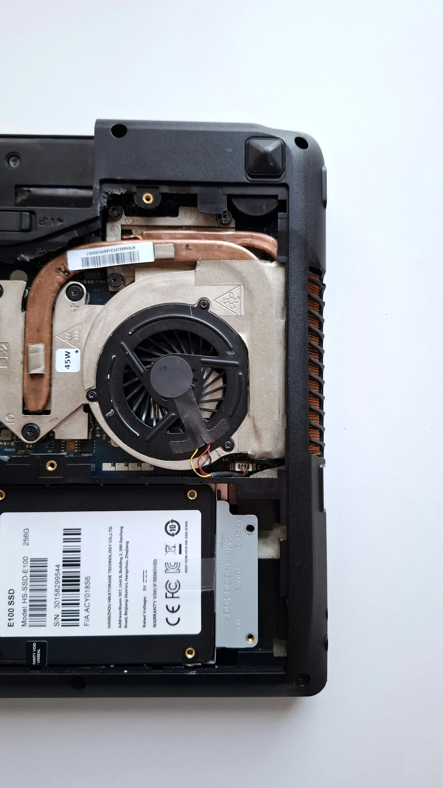
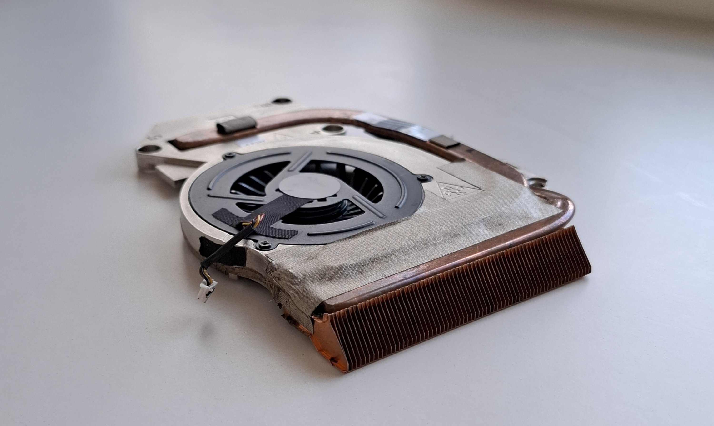
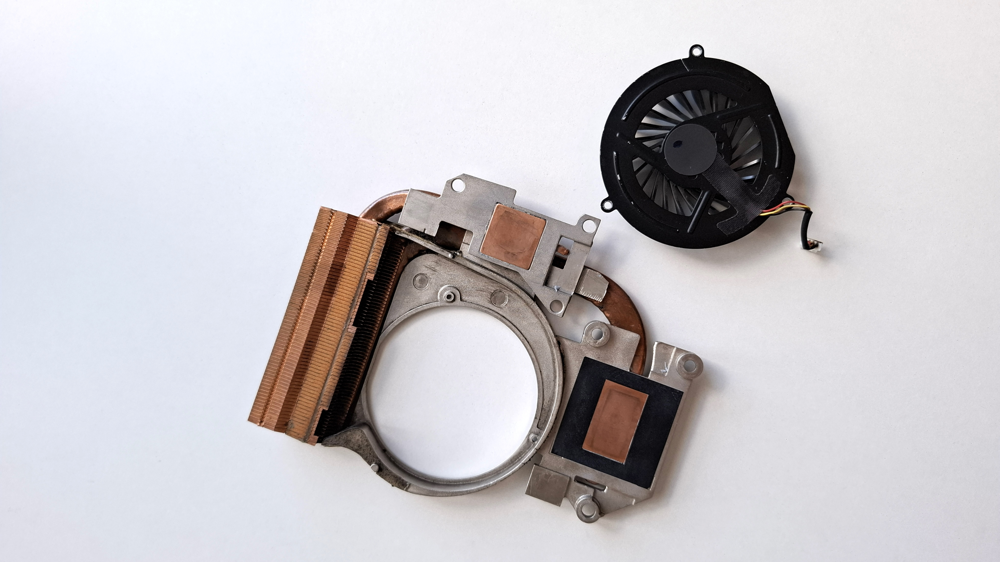
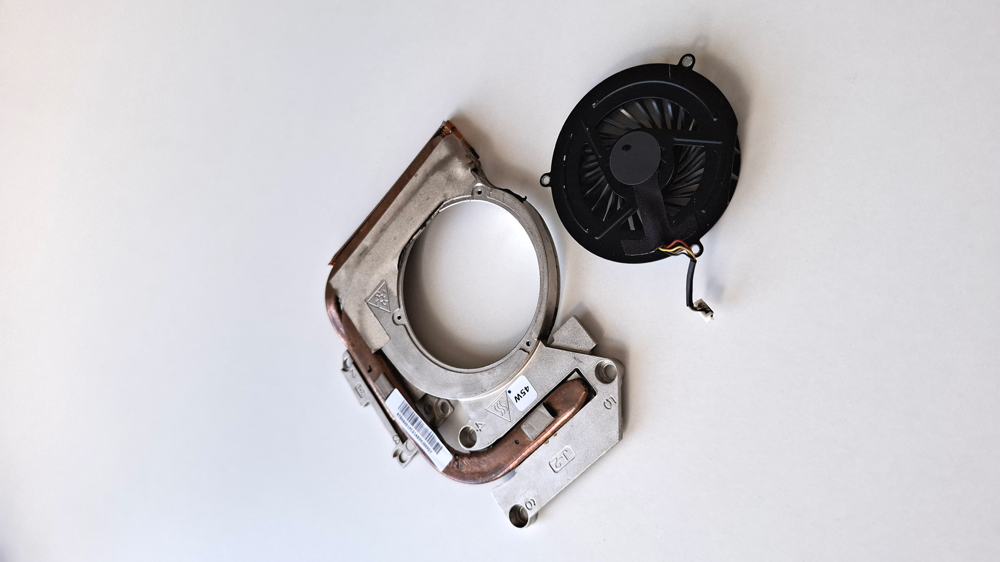

Ноутбук прошел полную профилактику:
- Система охлаждения (кулер и медные трубки) очищена от пыли.
- Нанесена качественная свежая термопаста Arctic MX-4 на процессор и видеочип.
- Вентилятор полностю продут и промыт и работает без посторонних шумов.
- Вся остальная часть материнской платы также продута воздухом.



